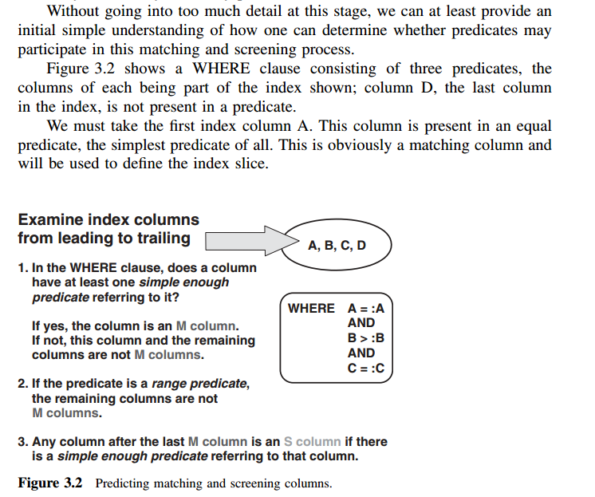
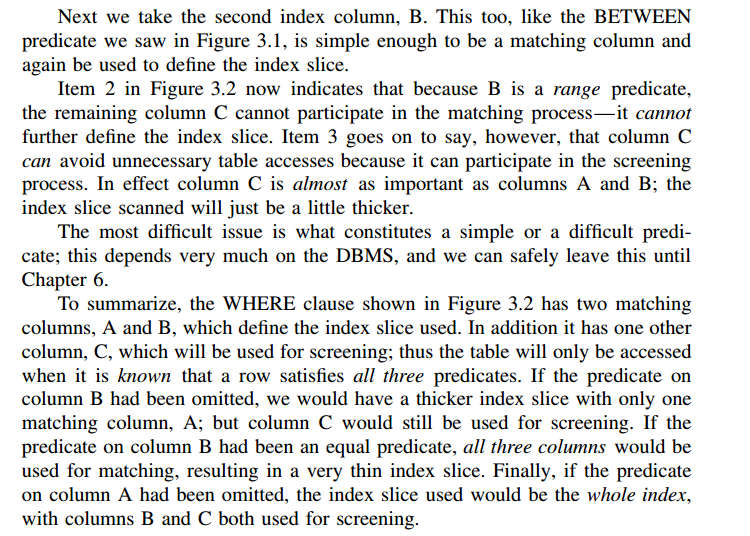

本章主要讲解了一个查询语句过来之后，DBMS内部是如何处理这一过程的。但是本章并没有细致的讲解，主要是给出了一些术语和基本的概念。本章覆盖的术语主要如下：
- SQL处理的一些概念
- 谓词(Predicates)
- 优化器以及访问路径(Optimizers and access paths)
- 索引片(Index slices)，匹配索引扫描(matching index scans)，匹配列(matching columns)，索引过滤(index
screening)和过滤列(screening columns) - 优化器何时确定访问路径
- 监控优化器
- 使用统计信息和所需FETCH调用的次数来指导优化器的行为
- 过滤因子(filter factor)。选择性(selectivity)和基数(cardinality)的概念以及对索引设计的影响
- 结果集物化(materialization)以及影响
谓词
说白了谓词就是WHERE后面的条件
优化器以及访问路径
用户一条查询语句下来，用户并不需要关系这条语句内部怎么执行的。但是这部分东西是交给DBMS来做的。在SQL语句真正能够被执行之前，优化器必须确定如何访问数据，这包括：应该使用哪一个索引，索引的访问方式如何以及是否需要辅助式随机读等等。所有的这些细节都包含在访问路径中。
索引片及匹配列
索引片，说白了感觉跟谓词的个数有关系。如果WHERE后面只有一个谓词，那么显然索引片就只有一个。所以，有另外一种使用较为广泛的描述索引片的方法是定义索引匹配列的数量。
访问路径的成本很大程度上取决于索引片的厚度，即谓词表达式所确定的值域范围。索引片越厚，需要顺序扫描的索引页就会越多，需要处理的索引记录也就越多，当然最大的开销还是来自于对表的同步读操作上。相应的，如果索引片比较窄，就会显著减少索引访问的那部分开销，但是主要的成本节省还是在更少的对表的同步读取上面。
索引过滤以及过滤列
有时候，列可能既存在于WHERE子句中(也就是谓词中)，也存在于索引中，但是这个列却不能参与索引片的定义(这里面我也没有弄明白为什么，希望能够在接下来的学习中明白其原因，此处借用原作者的一句话就是：现在我们只需要知道并不是所有的索引列都能够定义索引片的大小)。不过这些列仍然能够减少对表进行同步读操作的次数，所以这些列仍然扮演着重要的角色，我们称这些列为过滤列(screening columns)。
那么什么样的谓词能够定义索引片的大小；什么样的谓词不能够定义索引片的大小，只能够作为过滤列呢？附录1给了简单的一个例子。
访问路径中的术语(Access Path Terminology)
在这里需要提及另外一个术语，就是执行计划(execution plan)。这两个术语比较相近，在本书中。使用访问路径来描述数据访问的方式，使用执行计划来描述DBMS提供的EXPLAIN工具所产生的输出结果。接下来进入我们关注的重点。
匹配谓词有时候也称作为范围限定谓词(range delimiting predicates)。当有合适的索引存在时，如果优化器能够识别到某些谓词为匹配谓词，那么我们就称这个谓词是可索引的(indexable,有时也叫可搜索的(sargable))。
SQL Server中使用表查找(table lookup)这一术语来描述使用索引并且需要读取表行的访问路径。这不同于使用索引的访问路径。消除表访问的最显而易见的方式就是将缺失的列添加至索引上。许多SQL Server的书籍将这种能够避免某个SELECT调用的表访问的索引成为覆盖索引(covering index)。[评注：很多NoSql数据库也是这么做的，例如HBase上面的Phoenix就有这种技术，CCIndex[1]论文就是在分布式顺序表上面提供覆盖索引(聚簇索引)的典型技术之一]。
监控优化器
当发现一个慢SQL的时候，首先被怀疑的对象就是优化器，可能优化器选择了错误的访问路径。关系型数据库中的DBMS提供了一个叫做EXPLAIN的工具，用于解释优化器决定使用某个访问路径的原因。
帮助优化器(统计信息)
优化器是否能够做出很好的决定取决于优化器进行成本估算的时候所使用的信息是否完整。正常情况下，优化器默认能够使用采集的信息包括如下：每张表的记录数和表页数、叶子页数、每个索引的聚簇率、某些列或者某列组的不同值个数（基数），以及某些列的最大最小值。其他可选的统计信息的选项能够提供更多关于列和列组的值分布情况。
过滤因子(filter factors)
说白了就是描述谓词的选择性，即表中满足谓词条件的记录行数所占的比例，它主要依赖于列值的分布情况。
物化结果集
物化结果集意味着执行必要的数据库访问来构建结果集。在最好的情况下，只需要简单的从数据库缓冲池向应用程序返回一条记录。在最坏的情况下，数据库管理系统需要发起大量的磁盘读取。
参考文献
[1]Zou Y, Liu J, Wang S, et al. CCIndex: a complemental clustering index on distributed ordered tables for multi-dimensional range queries[C]// Ifip International Conference on Network and Parallel Computing. Springer-Verlag, 2010:247-261.
附录
附录1

